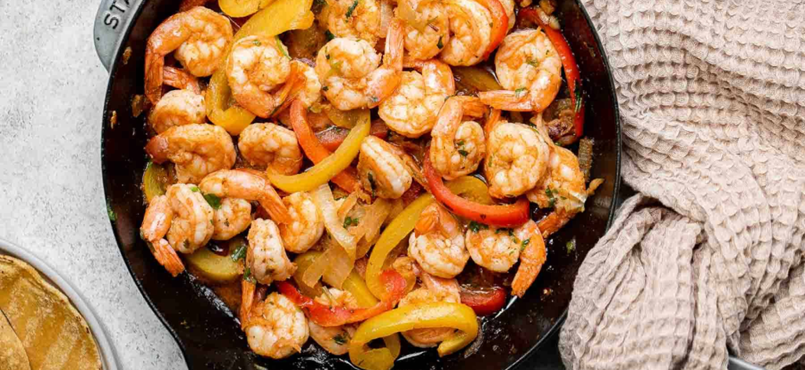

Seafoodp
Ingredients
- 1 tablespoon vegetable oil
- 2 cups sliced bell peppers red, orange, yellow or a combination
- 2 teaspoons chili powder
- 1/2 teaspoon ground cumin
- 1/4 teaspoon onion powder
- 1/2 teaspoon smoked paprika
- 2 tablespoons chopped cilantro
- 1 pound large shrimp peeled and deveined, tails removed if desired
- lime wedges for serving optional
- flour tortillas and fajita toppings of your choice
- salt and pepper to taste
You will also need measuring cups and spoons, mixing bowl, and large skillet.
-
To make these easy and delicious Shrimp Fajitas, you will need the following ingredients (full measurements in recipe card below):
shrimp - I recommend using large white shrimp but you can feel free to use any type of shrimp that you like. I also kept the tails on when cooking, but I recommend removing the tails if you are planning to serve them with tortillas (for easy eating).
fajita seasoning - we seasoned the shrimp with a homemade fajita seasoning blend of chili powder, ground cumin, paprika, garlic powder, and dried oregano.
oil - we used avocado oil, but feel free to use any vegetable oil that you have on hand.
vegetables - I used a variety of different colored bell peppers (feel free to use any color combination that you want), along with onions and garlic. You can also add in other quick-cooking such as green beans, zucchini, or sliced mushrooms.
salt and pepper
lime juice
cilantro
tortillas - optional, if serving with tortillas. Feel free to use corn tortillas or flour tortillas.
- HOW TO MAKE THE BEST SHRIMP FAJITAS
1-Season the shrimp. In a medium mixing bowl or ziploc bag, add shrimp, chili powder, cumin, paprika, garlic powder, and oregano. Mix well until evenly coated, and set aside.
2-Sauté vegetables. Heat 1 tablespoon oil in a large skillet over medium-high heat until the hot oil sizzles, about 1 minute. Add onion, garlic, and bell peppers and cook until soft, about 3-5 minutes.
3-Cook shrimp. Add the seasoned shrimp and the remaining 1 tablespoon oil. Stir well and cook until the shrimp turn pink and is cooked through on both sides, about 4-5 minutes. Season with salt and pepper to taste. Stir in lime juice and cilantro, and mix well to combine.
4-Serve. Serve immediately with tortillas or rice, if desired.
